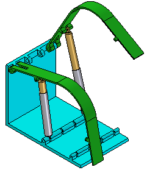
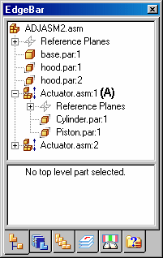
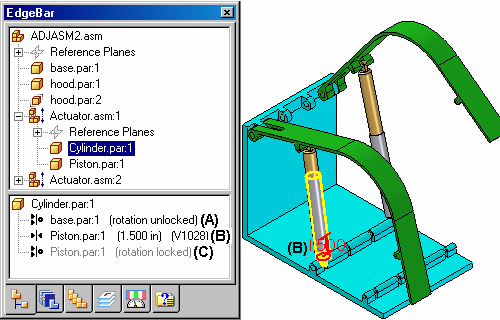
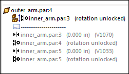

Adjustable and rigid assemblies
When working with assemblies, it is sometimes necessary to allow movement within a subassembly while working in a higher-level assembly. In other instances, it can be necessary to show identical subassemblies in different positions. For example, you can have two identical hydraulic cylinder subassemblies in an assembly, but need to show the hydraulic cylinders in different positions.

The Adjustable Assembly functionality allows you to address both of these issues.
Comparing rigid and adjustable subassemblies
Specifying that a subassembly is adjustable allows you to place positioning relationships between parts in the subassembly while in the higher-level assembly. This is not possible with a rigid subassembly.
When you specify that a subassembly is adjustable, you are prevented from in-place activating the subassembly. For example, when you try to in-place activate the subassembly using the Edit command, a dialog box is displayed that informs you that the subassembly is adjustable and to use the Open command to open the subassembly.
Displaying identical subassemblies in different positions
There are several approaches to solving this problem:
You can create uniquely-named subassemblies for each of the otherwise identical subassemblies. This allows you to assign unique offset values to the affected relationships, but creates extra files and complicates data management.
You can create a single-level assembly where the subassembly components are placed as discrete parts, instead of as a subassembly. This also allows you to assign unique offset values to the affected relationships, but makes it more difficult to reuse the hydraulic cylinder components later in another assembly. Another disadvantage of this method is that the parts are listed individually, rather than as a subassembly.
Alternately, you can use the Adjustable Assembly functionality within Solid Edge. This approach eliminates the need to create multiple copies of the hydraulic cylinder subassembly data set or to create single-level assemblies.
Preparing the subassembly
To use the Adjustable Assembly functionality, the subassembly can be left under-constrained in the range of motion in which you want to adjust. This allows you to apply the relationship(s) that you want to adjust in the higher level assembly, not in the subassembly.
Placing the subassembly into the higher-level assembly
You place the subassembly into the higher-level assembly in the same manner as you would any subassembly. There are several methods available to specify that you want the subassembly to be considered an adjustable assembly.
To specify that the subassembly is considered adjustable while you are placing the subassembly, set the Place As Adjustable option on the Options dialog box on the Assemble command bar.
To specify that the subassembly is considered adjustable after you have completed positioning the subassembly, select the subassembly in PathFinder, then click the Adjustable Assembly command on the shortcut menu.
Only subassemblies that contain parts that are not fully positioned can be marked as adjustable.
You can also specify that a subassembly is adjustable by setting the Place as Adjustable when this Assembly is Placed into Another Assembly option on the Assembly tab on the Options dialog box.
Regardless of the method used, a special symbol is used in PathFinder (A) to indicate the subassembly is adjustable.

If an adjustable part is formula driven, the movement of the other parts linked by constraints is not followed. Variables that control geometry changes in the adjustable part. are promoted to top level assembly but variables that drive formulas are not promoted. Only the numeric value of the variable in the subassembly is supported.
Working with adjustable assemblies
When a subassembly is set to adjustable, all assembly relationships existing within the subassembly are solved at the level of the active assembly. In other words, the relationships in the subassembly are promoted to the higher-level assembly for solve purposes.
The relationships used to position the parts within the subassembly can be viewed in the bottom pane of PathFinder when you select a part in the subassembly. These relationships are read-only and the text label is gray to indicate that the relationship cannot be edited. Displaying the read-only relationships makes it easier to evaluate the existing relationships and apply the remaining relationships.
For example, when you select cylinder.par:1 in the adjustable assembly named Actuator.asm:1, three relationships are displayed. The axial align relationship to base.par (A) was placed in the current assembly. It was used to position the subassembly in the current assembly, and is editable.
The Mate relationship to piston.par:1 (B) was placed in the current assembly after the subassembly was made adjustable. Its purpose is to adjust the length of the hydraulic cylinder subassembly and the relationship is editable.
Notice that no visual distinction is made between relationships (A) and (B), although one of the relationships was used to position the subassembly in the current assembly (A), and the other was used to position the two parts in the subassembly.

The remaining axial align relationship to piston.par:1 (C) was placed in the subassembly, is read-only and not editable within the current assembly. Notice that the text label is gray, indicating that the relationship is read-only.
If you specify that a subassembly is flexible, add positioning relationships, and then specify that the subassembly is rigid, conflicting relationships can occur. You can delete or suppress relationships to correct this situation.
Relationships in adjustable assemblies can also be overridden. This promotes the relationship up to the current assemby and is useful for making assemblies that are fully constrained adjust without having to provide and under constrained part in the subassembly. This is described in more detail below.
Overriding relationships in constrained assemblies
A fully constrained assembly can be placed as an adjustable subassembly. To do this, the relationship that needs to be free in the assembly to make it adjust can be overridden in the assembly where the subassembly has been placed. Make the subassembly adjustable using by right-clicking the occurrence in PathFinder and setting the assembly to adjustable. Then find the relationship within the subassembly that will be used to postion adjusting parts within the subassembly. In the lower pane of PathFinder, right-click on the relationship and then click the Override Relationship command. This will promote that relationship into the higher level assembly and it can be used to adjust the subassembly.
The overridden relationship appears in PathFinder as shown below.

The relationship can the be used as if the relationship exists in the current assembly. To remove the override, delete it in the lower pane of PathFinder.
Adjustable assemblies and adjustable parts
You can create assemblies that contain adjustable parts within an adjustable subassembly. For example, you may need to place two instances of a cylinder subassembly, with each subassembly in different positions.
Each cylinder assembly contains a spring that is an adjustable part, which allows the spring to change length as the cylinder subassemblies change positions.

When you make a subassembly adjustable that contains adjustable parts, the adjustable part variables are promoted to the current assembly.
If you define an assembly variable in the variable table for a subassembly that controls a part variable, the subassembly variable is promoted to the current assembly. The promoted variable is a linked variable.
For more information on creating and using adjustable parts in assemblies, see the Adjustable parts in assemblies Help topic.
Adjustable assemblies and the Drag Part command
If you specify that a subassembly is adjustable, and the combination of relationships at the active level and the promoted relationships allow movement, you can use the Drag Part command to reposition the parts. Adjustable assemblies work with all modes of the Drag Part command.
Because an adjustable subassembly is typically used to drive movement in an assembly, you may need to provide for that movement by suppressing or deleting relationships in the related parts and subassemblies.
Forming Assembly Relationships for Adjustable Assemblies
To get predictable results when creating an Adjustable Assembly do not form relationships between parts and assembly-level coordinate systems, base or reference planes, or sketches. The first part in the assembly should be grounded. All subsequent assembly relationships should be formed between other parts in the assembly or the grounded part, and not to assembly-level coordinate systems, base or reference planes, or sketches.
How do I
Define an adjustable partSet the adjustable/rigid status of a subassembly
Learn more
Adjustable parts in assembliesLook up more details
Adjustable Assembly commandAdjustable Part command (Part or Sheet Metal environment)
Rigid Assembly command
Rigid Part command
Edit Adjustable Part command
Adjustable Part dialog box
Adjustable Part command (Assembly environment)